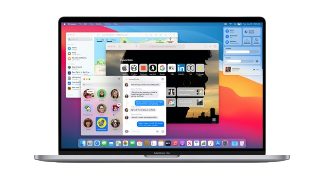
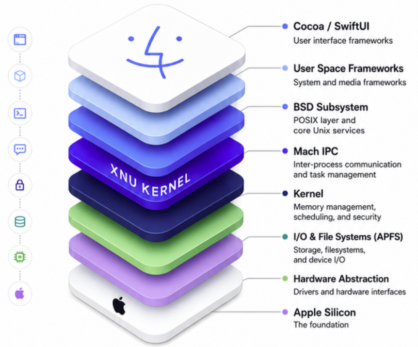

WHAT IS
MacOS?
Overview & History
MacOS was first introduced in 1984 for their new Macintosh PCs, with its defining property being its integration of graphical user interfaces (they would later inspire Microsoft’s Windows OS).
Most PCs at the time were operating by typing commands and directories, with no intuitive visuals.
MacOS innovated by creating a mouse that moves across the screen to select visual virtual files in the ‘Finder’.
In the 80s, Apple allowed Microsoft to use elements of MacOS during early development of Windows
MacOS followed with new features that are stable today, including file sharing over the internet and having multiple accounts on one device.
In 2001, Apple redeveloped MacOS into the more modern MacOS X, running on a Unix kernel, introducing features like memory protection, a more appealing UI, and the dock bar.


Architecture
The architecture of MacOS is based on Unix, integrating smoothly with Apple devices and especially native Apple applications.
It uses a layered system with different frameworks running on a powerful kernel, the XNU Kernel (a hybrid, Unix-derived kernel, incorporating features of the Mach microkernel and FreeBSD). The frameworks and systems running on this kernel consist of:
Cocoa and Carbon frameworks that enable GUI creation and rendering
The metal framework that communicates with the GPU on a low-level for graphics processes
Window Server that controls different windows, inputs, and high-level graphics management
General security mechanisms for encryption and privacy
At higher layers, additional frameworks for user interaction are implemented:
Media Frameworks like the Metal graphics API, Core Audio, and OpenCL
Cocoa Application Layer that provides direct support for AppKit (old app UI system), SwiftUI (new app UI system), and Swift runtime environments for App development